Plano alimentar completo
Monte refeições, substituições e estratégias com cálculo de calorias e macronutrientes.
APN Premium · inovação para quem lidera
A plataforma que transforma atendimento, equipe, agenda e finanças em uma operação integrada — com a sua marca no centro de tudo.
O Premium reúne tudo o que existe no Basic e adiciona a estrutura que sustenta crescimento: pessoas com acessos próprios, responsabilidades claras, agenda centralizada e gestão que não depende de planilhas soltas.
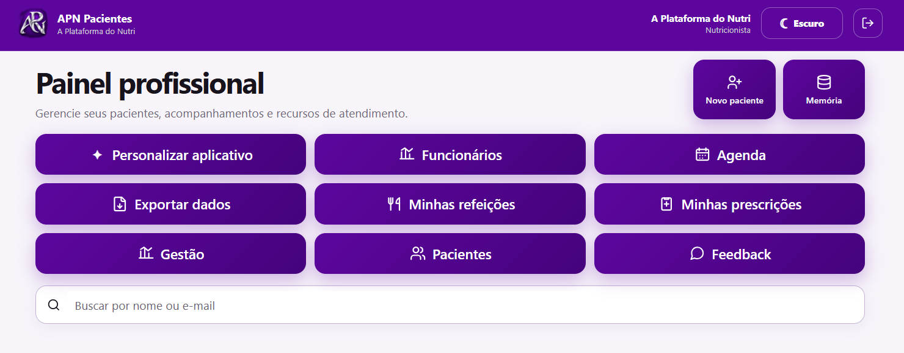
Tudo do Basic continua aqui. Aplicativo próprio, avaliações, plano alimentar, gasto energético, prescrições, PDFs, migração de dados e personalização de marca.
Ver a estrutura clínica do Basic →O Premium não substitui o Basic: ele contém toda a estrutura clínica do Basic e amplia o que acontece ao redor dela. O nutricionista avalia, calcula, prescreve, acompanha e entrega uma experiência própria ao paciente — agora com uma operação preparada para crescer.
Monte refeições, substituições e estratégias com cálculo de calorias e macronutrientes.
Calcule necessidades, déficit ou superávit e acompanhe a adequação em tempo real.
Antropometria, calorimetria, avaliação por imagem, comparações e PDFs.
Suplementos, orientações, exames e modelos profissionais organizados.
Feedback semanal, evolução e sinais de adesão reunidos no prontuário.
O paciente acessa dieta, avaliações, documentos e recursos dentro da sua identidade.
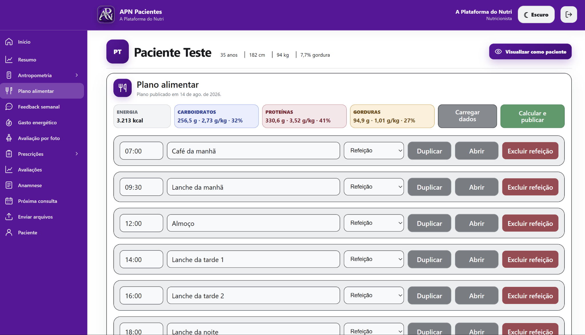
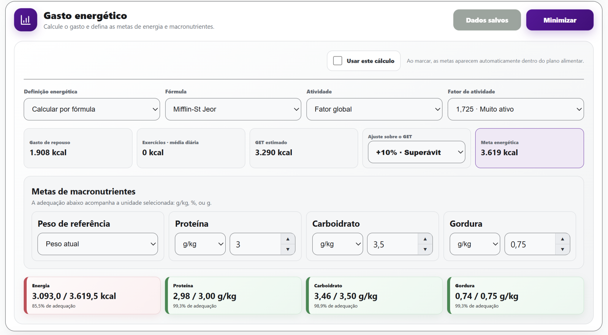

Quer conhecer cada recurso clínico em profundidade? A página do Basic detalha tudo o que também está incluído no Premium.
Explorar todos os recursos do Basic →Cada pessoa acessa somente o que precisa. A secretária organiza a agenda e as demandas. O estagiário atua nas áreas autorizadas. O profissional continua no comando clínico e estratégico.
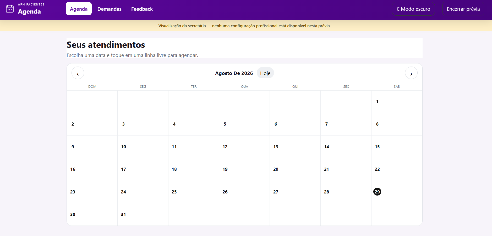
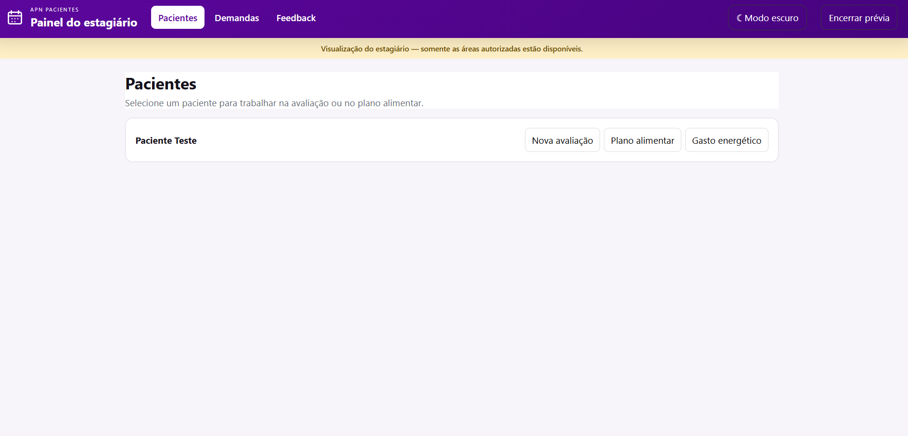
Mais organização e segurança sem compartilhar a conta principal.
Cada integrante trabalha dentro do limite definido pelo profissional.
O trabalho deixa de depender de mensagens perdidas e memória.
Configure horários, serviços e formulário. Organize os atendimentos internamente e ofereça uma página pública de agendamento com a identidade da sua marca.
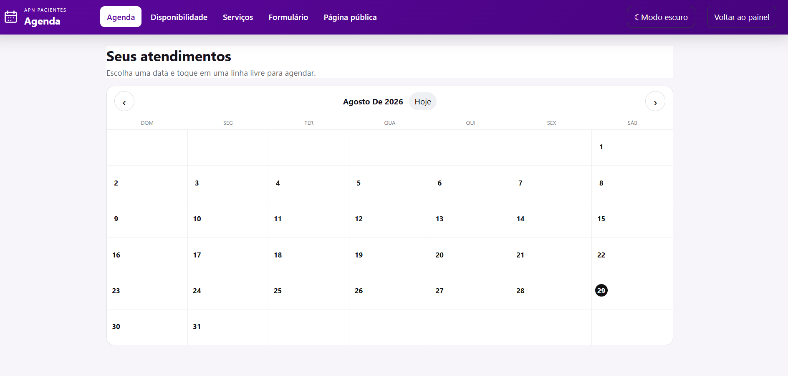
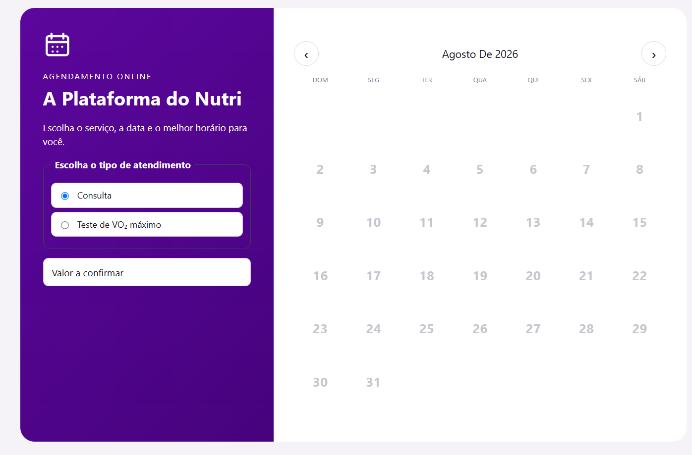
Acompanhe atendimentos, novos pacientes, reavaliações e recorrência. Registre serviços e recebimentos. Compare períodos e transforme movimento em decisão.
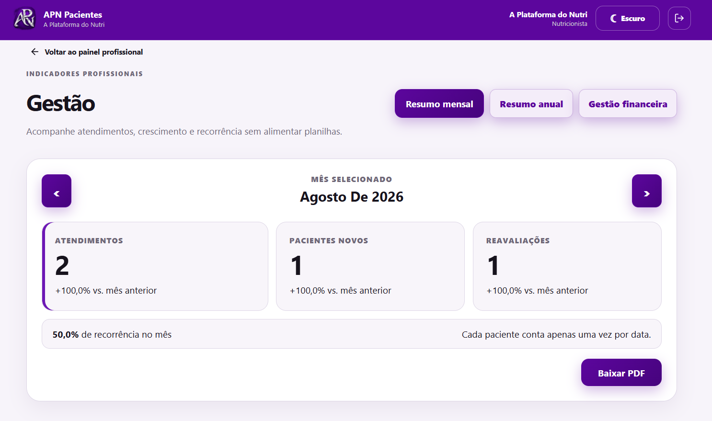
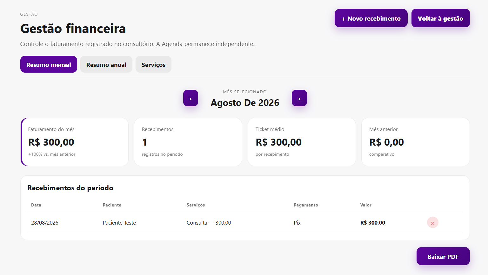
Feedback semanal e demandas da secretaria entram em uma fila organizada por prioridade. O que antes chegava disperso passa a fazer parte do processo.
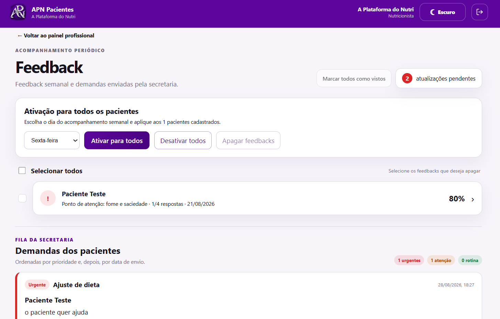
Agendamento e recebimento também aparecem dentro do prontuário. A jornada clínica e a operação administrativa passam a conversar.
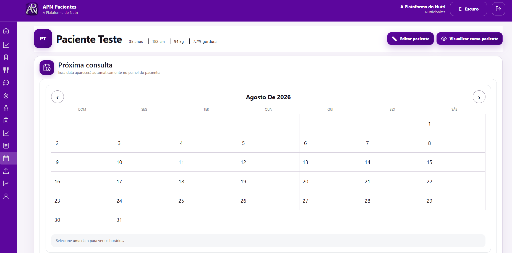
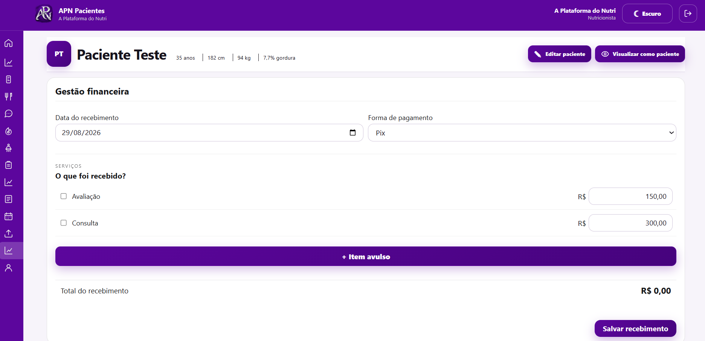
Um investimento único para reunir o atendimento do Basic à estrutura Premium de equipe, agenda, processos e gestão — tudo personalizado com a sua marca.
Você envia sua identidade. A APN personaliza, configura e entrega sua plataforma pronta para operar.
O Premium é o Basic completo somado à estrutura de operação. Veja aqui todos os detalhes clínicos incluídos.
APN Premium: propriedade, processo e visão para transformar um consultório dependente de você em uma operação conduzida por você.
Quero conhecer o APN Premium